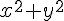
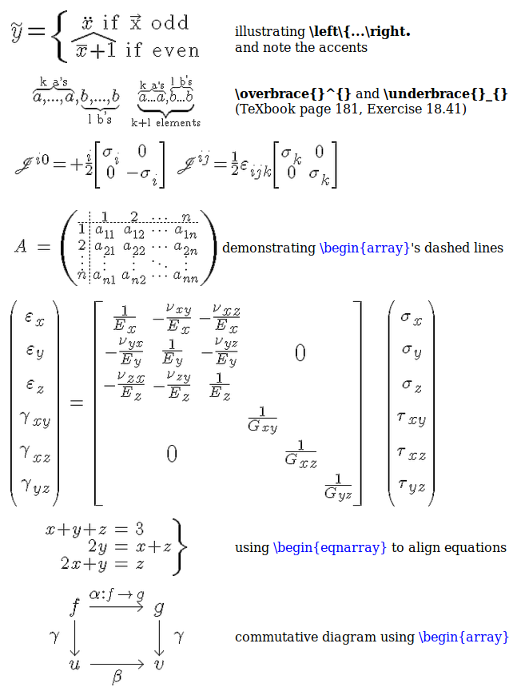

На 2018 год существует только одно независимое решение, написанное полностью на языке Си, для рендеринга формул из языка разметки TeX. Библиотека называется mimeTeX.
Сайт: http://www.forkosh.com/mimetex.html
Сайт расположен на каком-то полурабочем хостинге, и часто страницы не открываются. Но это его нормальное состояние.
Актуальная версия библиотеки - от 10 June 2017. Файл библиотеки прикреплен к этой записи.
Авторы не держат репозитарий, а просто выкладывают ZIP-архив с исходниками.
Компиляция под Linux:
gcc -DAA mimetex.c gifsave.c -lm -o mimetex
В результате получится бинарник mimetex. Его можно запустить на выполнение вот так:
./mimetex -d "x^2+y^2" > equation01.gif
В результате будет сгенерирована картинка:

Помощи по опциям программы сама консольная программа почему-то не показывает. Опции можно найти на официальном сайте на странце документации:
в разделе "Command Line Features".
Для отображения кириллистических символов необходимо использовать конструкцию типа {\cyr vkh}, которая выведет на экран символы "вх". Пример болеее сложного выражения с национальными символами:
A_{\cyr vkh}^4+B_{\cyr vykh}^4
транслируется в:
Подробнее о поддерживаемом подмножестве языка TeX написано в разделе документации "Syntax Reference".
Библиотеку пишут математики, поэтому она имеет много возможностей для отображения математических записей. Помимо традиционных уравнений, дробей, корней, интегралов, сумм, дифференциальных уравнений, библиотека может отображать системы уравнений, ряды, матрицы различных видов, диаграммы связей, а так же может подставлять и накладывать картинки, с помощью чего можно генерировать иллюстрации. Ниже дан пример сложных математических конструкций, которые умеет отображать mimeTeX:

Программу mimeTeX можно запускать просто в консоли Unix/Windows, передавая ей TeX-формулу в самой команде или указывая файл, из которого берется описание формулы на языке разметки TeX. Вывод mimeTeX можно сделать в виде GIF-файла. Если же опции генерации файла не указывать, в консоль будет выдана текстовая информация в виде большой матрицы из символов, каждый из которых представляет собой точку на изображении сгенерированной картинки формулы.
При обработке параметров никакой проверки синтаксиса не происходит. Все символы формулы воспринимаются в явном виде, без шелл-преобразований.
Полный список опций приведен ниже:
./mimetex [ -d ] dump gif image on stdout,
[ -e export_file ] or write gif image to export_file
[ expression expression, e.g., "x^2+y^2",
| -f input_file ] or read expression from input_file
[ -g1 -d ] dump .pbm-formatted image on stdout
[ -g1 -e export_file ] or write .pbm image to export_file
[ -g2 -d ] dump anti-aliased .pgm image on stdout
[ -g2 -e export_file ] or write .pgm image to export_file
[ -m msglevel ] verbosity of debugging output
[ -o ] render image with opaque background
[ -s fontsize ] default fontsize, 0-5
-d Rather than printing ascii debugging output, mimeTeX
dumps the actual gif (or xbitmap) to stdout, e.g.,
./mimetex -d "x^2+y^2" > expression.gif
creates expression.gif containing an image of x^2+y^2
-e export_file Like -d but writes the actual gif
(or xbitmap) directly to export_file, e.g.,
./mimetex -e expression.gif "x^2+y^2"
creates file expression.gif containing an image of x^2+y^2
expression Place LaTeX expression directly on command
line, with no -switch preceding it, as in the example
immediately above, or.....
-f input_file .....read expression from input_file
(and automatically assume -d switch). The input_file
may contain the expression on one line or spread out
over many lines. MimeTeX will concatanate all lines
from input_file to construct one long expression.
Blanks, tabs, and newlines are just ignored.
-g1 -d dumps a .pbm-formatted portable bitmap image to stdout.
Note that this is the bitmap image _before_ anti-aliasing.
-g1 -e export_file Like -g1 -d but writes the .pbm-formatted
portable bitmap directly to export_file, e.g.,
./mimetex -g1 -e expression.pbm "x^2+y^2"
creates file expression.pbm containing a bitmap image
of x^2+y^2 before anti-aliasing.
-g2 -d dumps a .pgm-formatted portable graphic image to stdout.
Note that this is the bytemap image _after_ anti-aliasing.
-g2 -e export_file Like -g2 -d but writes the .pgm-formatted
portable graphic image directly to export_file, e.g.,
./mimetex -g3 -e expression.pgm "x^2+y^2"
creates file expression.pgm containing a bytemap image
of x^2+y^2 after anti-aliasing.
-m msglevel 0-99, controls verbosity/message level for
debugging output (usually used only while testing code).
-o Rather than the default transparent gif background,
the rendered image will contain black symbols on an
opaque white background (or vice versa if compiled
with -DWHITE). For example, if you have ImageMagick's
display utility,
./mimetex -o -d "x^2+y^2" | display &
opens a small window containing the rendered expression.
(Note: if you already compiled mimeTeX with -DOPAQUE
then -o renders images on a transparent background.)
-s fontsize 0-7, font size. Font size can also be specified
within the expression by a directive, e.g., \Large f(x)=x^2
displays f(x)=x^2 at font size 4, overriding -s.
Default font size is 3.